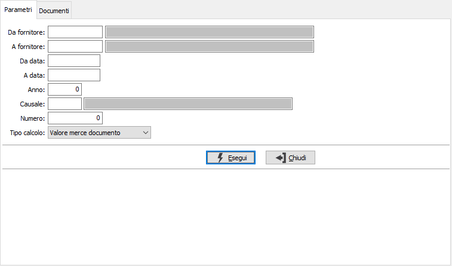
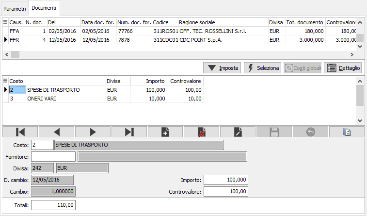
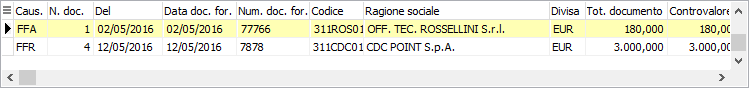
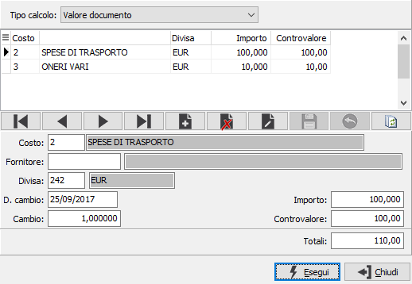
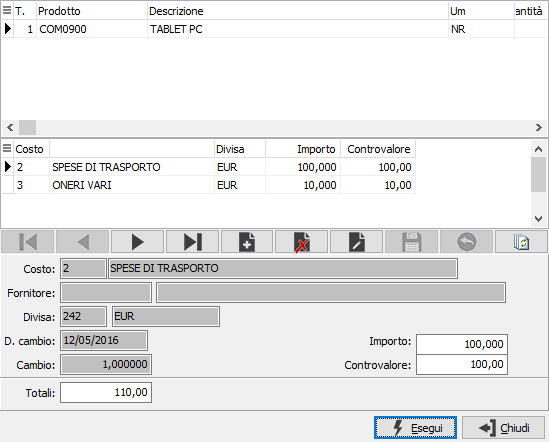

Registrazione costi da fatture
Con la versione Enterprise è possibile effettuare la registrazione di costi aggiuntivi al normale costo di acquisto della merce, ad esempio le spese di trasporto, imputandoli al documento o ai documenti a cui si riferiscono e ripartendoli in modo proporzionale al valore oppure alla quantità delle singole righe, in modo da arrivare alla determinazione esatta del costo di acquisto comprensivo della rispettiva quotaparte di spese ed oneri.
La procedura di Registrazione costi, tramite l'utilizzo delle voci di costo, permette questa prestazione. Il programma si sviluppa su due sezione distinte; la prima relativa ai Parametri di selezione dei Documenti da trattare e la seconda riguardante l'imputazione dei costi stessi sui documenti selezionati.

DA FORNITORE: eventuale codice del fornitore, presente in anagrafica, da cui si vuole iniziare la selezione. Confermando a vuoto, la selezione inizia dal primo fornitore valido. Sul campo sono attive le funzioni di ricerca (F9).
A FORNITORE: eventuale codice del fornitore, presente in anagrafica, con cui si vuole terminare la selezione. Confermando a vuoto, la selezione termina con l'ultimo fornitore valido. Sul campo sono attive le funzioni di ricerca (F9).
DA DATA: eventuale data del documento da cui deve iniziare la selezione relativamente ai precedenti parametri inseriti. Confermando a vuoto, la selezione inizia con il primo documento valido.
A DATA: eventuale data del documento con cui si desidera terminare la selezione relativamente ai precedenti parametri inseriti. Confermando a vuoto, la selezione si conclude con l'ultimo documento valido.
ANNO: eventuale anno del documento da selezionare. Questo parametro è considerato insieme ai due che lo seguono (causale e numero) per l'individuazione del singolo documento.
CAUSALE: eventuale causale del documento da selezionare. Questo parametro è considerato insieme al precedente ed al successivo (anno e numero) per l'individuazione del singolo documento. Sul campo sono attive le funzioni di ricerca (F9).
NUMERO: eventuale numero del documento da selezionare. Questo parametro è considerato insieme ai due che lo precedono (anno e causale) per l'individuazione del singolo documento.
TIPO CALCOLO: indica il metodo che deve essere utilizzato per la ripartizione degli eventuali costi globali che saranno registrati sui documenti. Valori possibili: valore merce documento, quantità documento.
Dopo avere inserito i parametri di selezione, la pressione sul pulsante Esegui, dà inizio all'elaborazione ed i documenti trovati saranno resi disponibile per la registrazione nella sezione Documenti.
La finestra è suddivisa in tre zone distinte: una griglia che contiene i documenti selezionati in base ai parametri specificati, una seconda griglia che contiene i costi imputati al documento selezionato nella parte superiore ed il relativo pannello per la manutenzione dei suddetti dati. L'assegnazione dei costi può avvenire per singolo documento o per più documenti selezionati.
I documenti che hanno già dei costi imputati compaiono su fondo giallo e tramite il pannello è possibile modificare i valori oppure cancellare quelle esistenti.

COSTO: definisce la voce di costo, in relazione ai prodotti inseriti sul documento, da utilizzare. Il campo non è modificabile in quanto collegato a quanto presente sul documento.
FORNITORE: eventuale codice del fornitore del servizio, se il campo è attivo sono presenti le funzioni di ricerca (F9).
DIVISA, DATA CAMBIO, CAMBIO: dati non modificabili inerenti il documento selezionato.
IMPORTO: indica l'importo in divisa relativo alla voce di costo inserita, da ripartire sulle righe del documento in relazione a quanto definito nella sezione Parametri.
CONTROVALORE: controvalore dell'importo espresso nella divisa di gestione.
Tramite la barra dei pulsanti è possibile effettuare le operazioni di assegnazione del singolo documento o la selezione di più documenti per poi effettuare l'assegnazione dei costi globali; è possibile anche esaminare e modificare il dettaglio dei costi delle righe del singolo documento.
Il pulsante Imposta consente di registrare i costi relativamente al singolo documento selezionato nella griglia in alto (identificabile dalla freccia sul lato sinistro della griglia stessa); la pressione del pulsante determina la comparsa nella griglia sottostante delle voci di costo relative al documento e consente l'inserimento di voci ed importi.
Il pulsante Seleziona consente di selezionare più documenti dalla griglia superiore per effettuare una successiva imputazione di costi globali. Le righe selezionate saranno riconoscibili in quanto appariranno su di uno sfondo giallo chiaro.

Il pulsante Costi globali consente, dopo la selezione dei documenti di inserire le voci ed i relativi importi, imputandoli in modo proporzionale ai documenti selezionati. I dati vengono inseriti tramite la seguente finestra.

TIPO CALCOLO: indica il metodo che deve essere utilizzato per la ripartizione di costi che saranno imputati ai documenti selezionati. Valori possibili: valore documento, quantità documento. Viene proposto lo stesso tipo selezionato nella sezione Parametri.
COSTO: definisce la voce di costo, presente nella tabella omonima, da inserire, sul campo sono attive le funzioni di ricerca (F9).
IMPORTO: indica l'importo in divisa relativo alla voce di costo inserita, da ripartire sulle righe dei documenti in relazione al valore del campo "tipo calcolo".
Il pulsante Dettaglio consente di visualizzare le singole righe del documento per esaminare la ripartizione dei costi effettuata. In questa finestra è possibile modificare l'importo del costo ed assegnare l'eventuale fornitore di competenza.

Al termine delle operazioni di registrazione, premendo il tasto F10 o il corrispondente pulsante Salva sulla toolbar viene richiesto se salvare i dati ed effettuare le registrazioni. I dati qui inseriti andranno ad aggiornare i movimenti di magazzino relativi ai documenti nella sezione dettaglio delle righe.